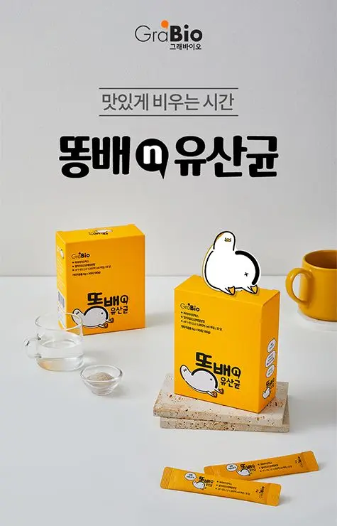
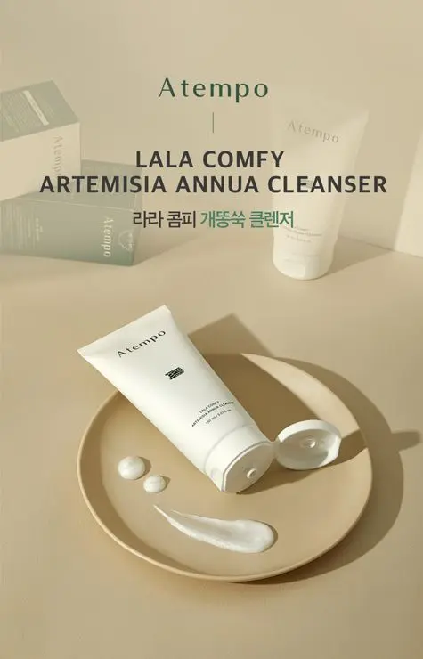

카탈로그에 들어갈 사진은 카탈로그를 아는 사람이 찍어야 합니다. 제품 컷부터 연구시설·공장 현장 컷까지 디자인팀이 직접 촬영합니다.


ABOUT
대전 촬영, 이렇게 다릅니다
01
지면을 알고 찍습니다
카탈로그 표지에 들어갈 컷과 사양표 옆에 들어갈 컷은 각도와 여백이 다릅니다. 퍼스트디자인 대전지사는 촬영 전에 카탈로그·홈페이지의 지면 구성을 먼저 정하고, 그 자리에 맞는 컷 리스트를 만들어 촬영합니다. 그래서 촬영 후 "이 각도가 없네요"라며 다시 찍는 일이 생기지 않습니다.
02
연구시설과 공장은 찾아가서 찍습니다
바이오 기업의 클린룸, 대덕산단의 생산 설비, 병원의 진료실처럼 옮길 수 없는 현장은 조명 장비를 가지고 직접 방문합니다. 촬영 가능한 구역과 보안 규정을 사전에 확인하고, 작업자 동선에 방해가 되지 않도록 촬영 시간을 잡습니다. 대전·세종·청주·공주는 출장비 없이 진행합니다.
DETAIL
촬영 · 스튜디오 서비스
필요한 항목만 골라 의뢰하셔도 좋습니다.
01
STUDIO
제품 · 바이오 · 의료기기 촬영
카탈로그와 상세페이지에 쓸 제품 컷을 스튜디오에서 촬영합니다. 누끼 컷과 연출 컷을 같은 조명 조건으로 한 번에 찍습니다.
누끼 · 연출 · 사용 장면 컷
바이오 · 화장품 · 의료기기
카탈로그 지면 기준 컷 리스트
색 보정 · 리터칭 포함
02
STUDIO
연구시설 · 공장 · 기업 출장 촬영
회사소개서와 홈페이지에 쓸 시설·장비·업무 장면을 현장에서 촬영합니다. 보안 규정과 작업 동선을 확인하고 일정을 잡습니다.
연구시설 · 생산 설비 촬영
임직원 · 업무 장면 촬영
병원 · 매장 공간 촬영
충청권 출장비 없음
03
STUDIO
영상 촬영 · 홍보 영상
제품 시연 영상, 기관 소개 영상, 숏폼을 기획부터 편집까지 진행합니다. 전시회 부스와 홈페이지에 바로 씁니다.
제품 시연 · 기술 설명 영상
기관 · 기업 소개 영상
릴스 · 쇼츠 숏폼
자막 · 모션 그래픽
WORKS
촬영 사례
제품 촬영 — 건강기능식품제품 촬영 — 구강 케어 브랜드제품 촬영 — 화장품 브랜드제품 촬영 — 코스메틱 기업